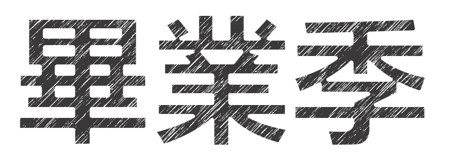
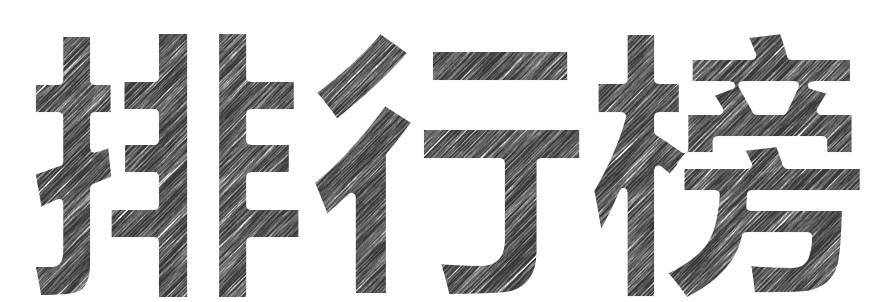

Ever youthful, Ever weeping


北京大学
清华大学
浙江大学
上海交通大学
复旦大学
南京大学
中国科技大学
哈尔滨工业大学
华中科技大学
中山大学
东南大学
天津大学
同济大学
北京航空航天大学
四川大学
武汉大学
西安交通大学
南开大学
大连理工大学
山东大学
吉林大学
厦门大学
北京师范大学
北京理工大学
苏州大学
中南大学
北京科技大学
给即将进入社会的你们：
不管遇到多大的困难，要永远对社会充满信心和斗志才是一个正确的态度，千万不要被那些浮躁的但是听起来非常舒服的话所困惑。
要永远年轻，永远热泪盈眶
通过开展就业创业教育专题讲座、毕业生班主任、相关系部会议，为毕业生就业搭脉.
学院领导、系领导、辅导员、班主任将组织专项值班，深入到毕业生宿舍、班级和学生之中，广泛听取学生的意见和建议.
开展党员教育活动。以“讲奉献，树旗帜，立标杆”为主题，在毕业生党员中开展廉洁从政教育。
开展廉洁从医、发扬高尚医德、乐于奉献的职业教育活动。
开展丰富多彩的教育活动。开展“春风化雨润芳菲，扬医精神永相承”毕业生考研交流会活动.
举办“感悟大学放飞青春梦想，建言献策助推母院腾飞”多层面毕业生茶话会。
做好宣传工作。在毕业生中进行“磨砺人生，硕果累累”优秀毕业生访谈，重点访谈我院优秀毕业生，宣传展示其学习、工作经历。